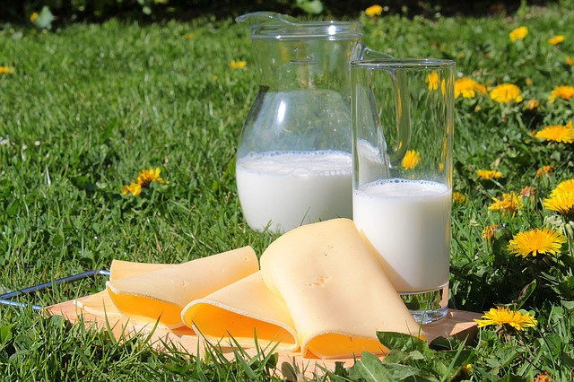

Ten Must Have Foods For New Mothers
When you become a new mom there are responsibilities that come with it. You'll have to take on not just your own obligations but also that of your baby's. This is the most crucial opportunity to develop the mental and physical development of your child , which will be evident in the future of your child. Therefore, now is not the right time to sacrifice your health, or else in the long run, you're likely to harm the development and health of your child in the indirect way.
Which are your top 10 food items that are essential to new mothers?
Let's take a look at the essential food items for moms who are expecting. The top 10 must-have items are as follows:
The green leafy vegetable: This one is the particular food item that is at the top of the list because of its many advantages. Green leafy vegetables such as spinach, broccoli and others are extremely important for breastfeeding moms. They are abundant in Vitamin A iron, Vitamin A and Vitamin C. These minerals and vitamins aid breastfeeding mothers to not only get nutrients, but also pass the nutrients to their infants during breastfeeding. Green leafy veggies have a very low calorific value , and are also a great source of calcium and antioxidants. Both are important for the mother and her baby.
milk: One of the most important foods that lactating mothers should choose to consume at the very starting point is the milk. Yes, you read that right. Milk is essential for mothers who are new. If you're breastfeeding and consume milk on a regular basis, it can help in increasing and stimulating the production of your breast milk, but will also aid in the growth of your baby in indirect ways. The essential minerals and vitamins present in milk are Calcium, Vitamin B, and Vitamin D. It is also a great source of proteins which will assist in improving your health as well as the rapid development of your infant. Milk also has a significant levels of water, and thus assists in keeping your body well-hydrated. Therefore, it is advised to drink at least 2 glasses of milk every day.
Salmon A essential foods for mothers-to-be is salmon. Salmons contain a significant quantity of DHA. It is an essential ingredient that aids in growth of nervous system of infants. Furthermore salmon is also abundant in proteins and vitamins B12 which are two of the most important nutrients needed by newborns and mothers.
Eggs The protein-rich food is not required to be introduced in any way. Eggs are a must for mothers who are expecting as well as their babies. Eggs are also high in vitamin D. They can aid in the growth of bones, skeletal system, as also the muscles of infants. This is why it's a essential food item for any pregnant mother. Eggs also contain the chemical choline. It is essential to developing the brains of infants. Thus eggs are essential every day.
Almonds However, they are another great option that you can choose. Almonds are a abundant source of Vitamin E which is important for your health and your child's overall health. Additionally is that it's also a great source of essential fats which are vital for the development of the body. One of them is omega-3 fats. This element of your diet can aid in the production of and rise in breast milk which will surely help your baby.
Fenugreek: Fenugreek is a must-have for any mother-to-be. This is because it is a rich source of phytoestrogens. This element is extremely helpful in the the production of breastmilk. Additionally is that it contains a lot of choline and sapoline. Both of them are crucial for newborn babies. Furthermore, fenugreek helps to fight constipation and flatulence, both of which can be a problem for newborn mothers. The seeds of fenugreek can be put overnight in water, and can be stained before drinking at the beginning of each day.
Fennel Fennel can be another essential food item that you could always choose. Fennel aids in increasing breast milk of lactating mothers. Furthermore is that it aids greatly in digestion. This is often described as a super food when pertains to mothers who are new.
Brown rice: Brown rice is a great source of lots in whole grains of carbohydrates. Brown rice can help maintain a healthy blood glucose levels. Additionally is that it's a source of fiber that helps to prevent constipation to a large degree. It is always an energy level that is high once you start eating brown rice.
Blueberries The blueberries are an absolute necessity to be included in the diets of all new mothers. This fruit contains a huge amount of antioxidants. Furthermore is that it also contains free radicals. Both are essential to ensure that your child is healthy. read more
Carrots Carrots provide abundant in vitamins particularly vitamin A. They do not just help improve energy levels but also aid in keeping illnesses at bay in the situations of newborn mothers. Beta carotene is crucial during lactation periods.
Conclusion

These are the top 10 food items which are essential for mothers-to-be. But, it is important to be kept in mindthat while you are going through your lactation period it is important to take care of yourself with a lot. It will show in your child too. Be careful not to eat fast food or meals that are extremely spicy. While at times, you might have the urge not to eat, ensure that you ensure that your child's health is in your mind. If you're well-nourished and healthy then your child will improve their development.